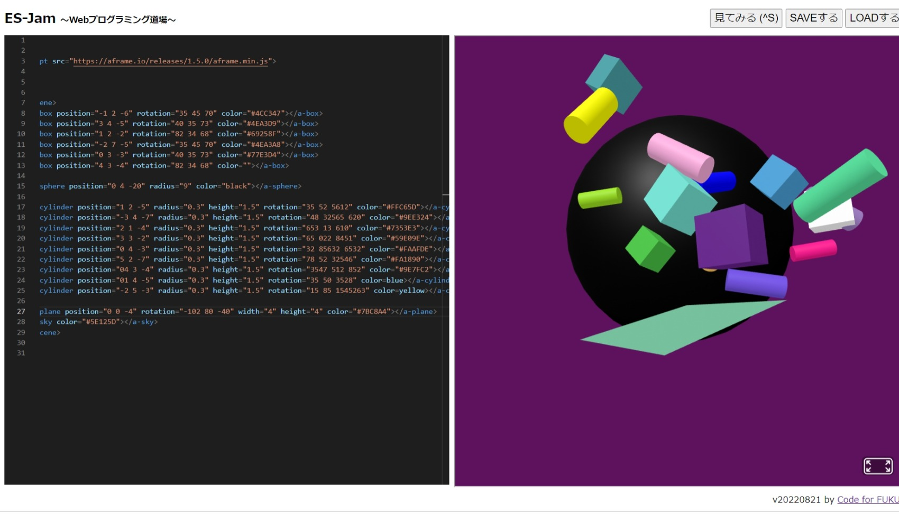
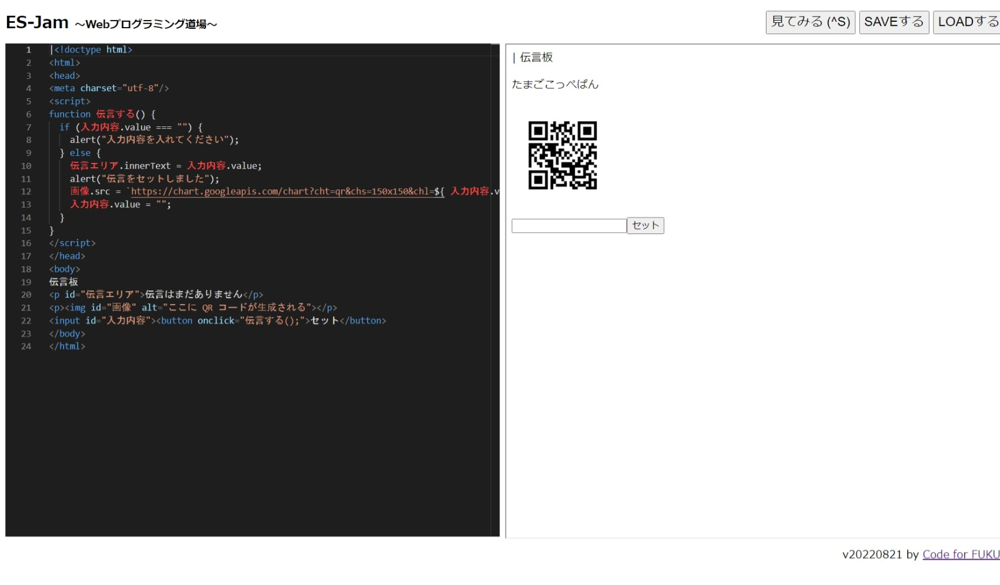

第3週目
3-1 JavaScript体験：VR空間を作る

伝言板
1.内容
webプログラミング道場とA=Frameを使用してVR環境を構築した。A-Frameには球と直方体と立方体のVRが用意されており、私たちはその物体の色を変えたり大きさを変えたり場所を変えたりした。
2.感想
私はVRを作るのはいろいろなプログラム言語でごちゃごちゃするものだと思っていたから、これだけ簡単にできてすごかった
3-2 JavaScript体験：伝言プログラムを作る

伝言板
1.内容
webプログラミング道場を使用してhtmlとJavaScriptをしようして伝言板を作成した
2.感想
少し前からどのような仕組みで動いているか気になっていたので理解できてよかった
3-3 JavaScriptプログラムの３次元空間の体験
1.内容
2週目に使ったmetaQuest2を使用して先生が作成したVRの世界に入った
2.感想
作成したVRの世界がブラウザから入れることに驚いた。本当にVRゴーグルだけでVRの世界を楽しめそうだった。